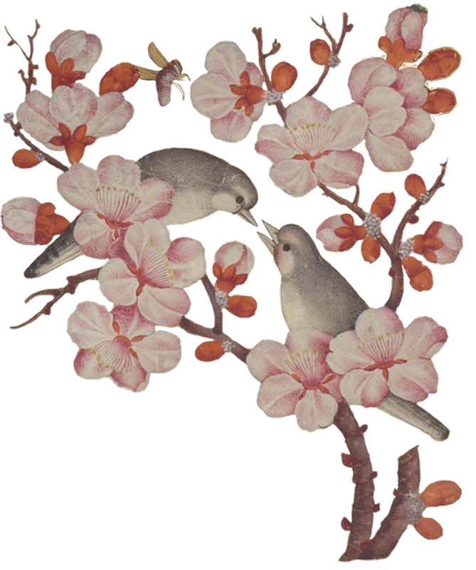
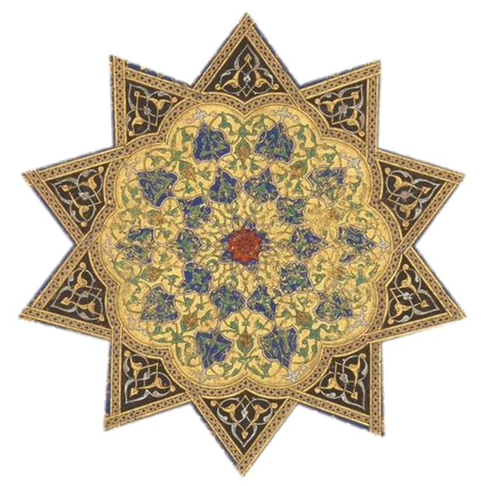

Wonders and Rarities
The Marvelous Book that Traveled the World and Mapped the Cosmos
Harvard University Press · 2023 · Paperback edition, 2024 · xii, 445 pages
Wonders and Rarities was awarded the 2026 Haskins Medal by the Medieval Academy of America, the organization's most distinguished recognition, granted annually to a book of exceptional importance and transformative influence. The book follows a compendium of natural history written in Arabic and Persian. From the wake of the Mongol conquests in the thirteenth century, through lavishly illustrated manuscripts, commentaries, and translations, this encyclopedia of natural wonders continued to animate students, artists, patrons, and leading elites long after the discovery of the New World had rendered its geography obsolete. At the center of this history is an argument about wonder itself: not as a catalogue of marvels, but as a cognitive mode of perception and learning, a human response to the limits of knowledge that mobilizes curiosity, imagination, and playfulness in the face of a cosmos held together by hidden correspondences. The Haskins Medal committee described the book as pairing “the most rigorous scholarship, incisive inquisitiveness, and entertaining narratives to conjure up lives, feelings, and ideas from other worlds,” a demonstration, in their words, that there is room in our modern epistemologies for the dynamic openness of wonder.
Awards

- 2026 Haskins Medal Medieval Academy of America fas.yale.edu →
- 2024 Aldo and Jeanne Scaglione Prize for Middle Eastern Studies Modern Language Association of America mla.org →
- 2024 PROSE Award in World History Association of American Publishers proseawards.com →
- 2024 Parviz Shahriari Book Award for History of Mathematics, Science and Technology Association for Iranian Studies associationforiranianstudies.org →
- 2024 Shortlisted, Award for Excellence in the Study of Religion: Historical Studies American Academy of Religion aarweb.org →
Endorsements
The wonders and curiosities of the Islamic imagination await discovery by a new generation of readers in this superb and very enjoyable book by Travis Zadeh.
Orhan Pamuk, Nobel Laureate in LiteratureA remarkable account of how a single text captivated readers for centuries, across the boundaries of language, religion, culture, and politics. Travis Zadeh’s engrossing study uncovers, with great erudition, the genesis and many afterlives of an extraordinary book.
Richard Ovenden, Bodleian Librarian, Oxford UniversityA magnificent and essential book. Zadeh deftly illuminates centuries of occult and natural history, restoring Qazwini’s place in this vast world of thought. The result is an astonishing work of Islamic intellectual and cultural history.
Rana Safvi, author of Shahjahanabad: The Living City of Old DelhiBeautifully written and deeply researched, this book explores the religious and intellectual importance of wonder in Islamic civilization through the study of a classic text. A must-read.
Jamal J. Elias, University of PennsylvaniaIn the Press
Zadeh faces the mammoth task of mastering the same range of disciplines as Qazwini himself, from alchemy to botany, philosophy, theology and zoology. These feats are themselves worthy of wonder.
Helen Pfeifer, Cambridge UniversityZadeh writes with a clear and breezy lyricism that makes light reading of heavyweight topics. Like Qazwini himself, Zadeh has written a deliciously baggy tome, full of delights and diversions in its tour of the cosmic horizons. This is a book to get lost in, whether one wants to or not.
Nile Green, University of California, Los AngelesIn this beautifully written and engaging text, Zadeh takes his readers back to the world of surprise and enchantment that preceded this closure.
Malise RuthvenThe notes are a wonder in themselves. How can anyone have read so much?
Robert Irwin, School of Oriental and African StudiesThis book about a book, like the book it describes, is a rare and marvelous thing. In his passionate and erudite mission to restore Qazwini to centre stage, Zadeh has given readers a book filled with its own wonder and marvels.
Justin MarozziAcademic Reviews
- Aisha Valiulla. Medieval Encounters 32.1 (2026): 68–70. doi →
- Yossef Rapoport. Bulletin of SOAS 87.3 (2024): 560–561. doi →
- Palmira Brummett. Journal of Islamic Studies 35.3 (2024): 410–14. doi →
- Sam Ottewill-Soulsby. Al-Masaq 36.2 (2024): 206–07. doi →
- Nora Jacobsen Ben Hammed. Sixteenth Century Journal 55.1–2 (2024): 478–802. doi →
- Godefroid de Callatäy. Al-Qantara 44.2 (2023). doi →
- Ian Richard Netton. Literature & History 32.2 (2023): 187–89. doi →
- Cyril V. Uy II. Magic, Ritual, and Witchcraft 18.3 (2023): 476–79. doi →